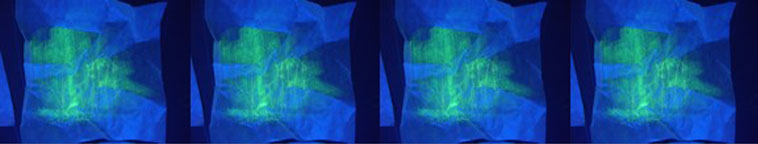

|  |
| Chromogenic materials > Scratch the Surface Ink > Embrace the fugitive |
EMBRACE THE FUGITIVE fugitive, adj. 1. a. Apt or tending to flee; given to, or in the act of, running away. b. That has taken flight, esp. from duty, an enemy, justice, or a master. Also, of a debtor: Intending flight. c. Of a substance (e.g. the metal mercury): Escaping from or eluding the grasp, slippery. 2. Driven out, banished, exiled. Const. from, of. 3. Moving from place to place; flitting, shifting, vagabond. Also fig. Fickle. 4. a. Of immaterial things: Evanescent, fleeting, of short duration. b. Of impressions, colours, etc.: Quickly fading or becoming effaced. Less correctly of material substances: Perishable. c. Of a chemical substance: Volatile. rare. d. Bot. Of flowers and petals: Soon falling. 5. Of a literary composition (occas. of a writer): Concerned or dealing with subjects of passing interest; ephemeral, occasional. (OED) fu•gi•tive \fyü-j-tiv\ adjective 1: running away or intending flight. 2: moving from place to place:
From nature we know that matter is fugitive. Seeds scatter, birds migrate, diseases spread. Why then does it surprise us that the products of our own devices move from place to place and turn up in the most unlikely places? That additives and breakdown products are in our bodies and beluga whales? How did they get there, these dangerous and unwanted molecular guests? last: footprint (Old English) It is not just a matter of substance and place. It is also one of sustainability and duration. Some things are meant to last and some things maybe aren’t. There is general agreement that shelters and supports should not collapse, fail and fatigue. When we go home at the end of the day we are happy to find that our house is still there. But on the other hand, does a plastic fork or disposable bottle really need to last forever? Sometimes the lifetime of a product is grossly out of synch with its use. Because of this, and likely migration routes, objects and their breakdown products are found in most unwelcome places. Plastic bags become witches knickers and urban tumbleweed, fluttering 21st century wind chimes. Consumer waste and castoffs of industrial production become synthetic seaweed and useless buoys before their slow erosion to mermaid tears, nurdles, molecular constituents—unnourishing food for aquatic life and us.
When we first discovered Scratch the Surface Ink and showed it to people, often they would say “Wow! That’s great, but can you make it last?” There is a certain sadness about things that don’t endure. In fact, we do have ways to stabilize the image, but is that the point? There are many ways to make marks that last. What about those that don’t? In the text messaging internet age we are familiar with passing thoughts and short attention spans, but what about materials that fade and degrade? On many media, Scratch the Surface Inks are not fixed but fleeting. They offer a transient record of force, a fading memory of touch. They capture a history that is not preserved. If you happen to be there, you will see it. But there is hope too. Scratch the Surface Inks are not only fugitive. They also are self-healing and regenerative. Events are recorded, memories fade, but then you can have the experience again, or a new one. How to embrace the fugitive? Can such a concept be a model for design? -Cassandra Fraser
|
|